ÍNDICE
Índice
| # | Capítulo | O que cobre |
|---|---|---|
| 01 | Posicionamento | Promessa da marca, jornada, públicos e mapa de rotas |
| 02 | Home | Cabeçalho, hero, confiança, categorias, destaques, portal e newsletter |
| 03 | Catálogo | Filtros, URL, cartões, preços, PROMO e stock |
| 04 | Produto | Galeria, tamanhos, preço, garantias e relacionados |
| 05 | Carrinho | Camada lateral, quantidades, cupões, partilha e persistência |
| 06 | Checkout | Portes, pagamento, redirecionamento Shopify e erros |
| 07 | Confirmação | Número, código exclusivo, rastreio e autenticidade |
| 08 | Portal | Acesso por três fatores, dashboard, estados e confirmação |
| 09 | Autenticidade | Verificação pública, resultado válido, inválido e privacidade |
| 10 | Operações | Chave, indicadores, fila, editor, avanço e reposição |
| 11 | Mobile | Breakpoints, menu, grelhas, toque e desempenho |
| 12 | Tecnologia | Stack, ficheiros, variáveis, build, deploy e segurança |
| A | Anexo A | Dados de demonstração |
| B | Anexo B | Resolução de problemas |
| C | Anexo C | Comandos, build e deploy |
| D | Anexo D | Mapa de ficheiros e glossário |
Índice detalhado
| Secção | Título |
|---|---|
| 1.1 | A promessa |
| 1.2 | A jornada |
| 1.3 | Públicos |
| 1.4 | Mapa de rotas |
| 2.1 | Cabeçalho e navegação |
| 2.2 | Hero e faixa de confiança |
| 2.3 | Categorias e destaques |
| 2.4 | Bloco do portal e newsletter |
| 2.5 | Temas e idiomas |
| 3.1 | Filtros e pesquisa |
| 3.2 | Sincronização com o cabeçalho |
| 3.3 | Cartões de produto |
| 3.4 | Preços e PROMO |
| 3.5 | Stock e estados |
| 4.1 | Galeria e informação |
| 4.2 | Tamanhos e stock |
| 4.3 | Garantias e relacionados |
| 5.1 | Artigos e quantidades |
| 5.2 | Cupões |
| 5.3 | Partilha e persistência |
| 6.1 | Entrega e portes |
| 6.2 | Pagamento e Shopify |
| 6.3 | Cupões e erros |
| 7.1 | O que o cliente recebe |
| 7.2 | Âmbito da demonstração |
| 8.1 | Acesso por três fatores |
| 8.2 | Dashboard do cliente |
| 8.3 | Fluxos de estado |
| 9.1 | Como verificar |
| 9.2 | Resultado válido |
| 9.3 | Resultado inválido e privacidade |
| 10.1 | Entrada e indicadores |
| 10.2 | Fila e pesquisa |
| 10.3 | Editor e avanço de estado |
| 10.4 | Credenciais, histórico e reposição |
| 11.1 | Breakpoints e menu |
| 11.2 | Ecrãs pequenos |
| 12.1 | Stack e ficheiros |
| 12.2 | Variáveis de ambiente |
| 12.3 | Build, deploy e segurança |
01 / POSICIONAMENTO
POSICIONAMENTO
Uma loja, não um catálogo.
O site existe para responder a três perguntas antes que o cliente as faça: é original? serve-me? e depois da compra? Cada ecrã responde a uma delas.
1.1 A promessa
- Descoberta rápida — catálogo filtrável, stock visível e preço sem ambiguidade.
- Compra curta — carrinho lateral, checkout em três decisões e pagamento no ambiente seguro da Shopify.
- Pós-compra verificável — portal privado por encomenda e código de autenticidade por par.
1.2 A jornada
Home → Catálogo → Produto → Carrinho → Checkout → Confirmação
↓
Portal de rastreio → Autenticidade
↓
Painel de operações| Momento | Pergunta do cliente | Resposta do site |
|---|---|---|
| Descoberta | “O que têm?” | Home, categorias e catálogo filtrável |
| Decisão | “Serve-me? É original?” | Página de produto, stock por tamanho, selo Verificado |
| Compra | “Como pago?” | Checkout com entrega e pagamento Shopify |
| Pós-compra | “Onde está o meu par?” | Portal com estado, timeline e confirmação |
| Confiança | “É mesmo UFFA?” | Verificação pública UFFA-AUTH |
1.3 Públicos
| Público | O que precisa | Onde encontra |
|---|---|---|
| Cliente final | Escolher, comprar e acompanhar | Site público, checkout, portal |
| Equipa de operações | Atualizar estados e comunicar | /operacoes |
| Marketing | Mostrar produto, preço e prova | Home, catálogo, autenticidade |
| Parceiros | Perceber o modelo | Apresentação e este manual |
1.4 Mapa de rotas
| Área | Rota | Acesso |
|---|---|---|
| Home | / | Público |
| Catálogo | /catalogo | Público |
| Produto | /produto/:id | Público |
| Carrinho | camada lateral | Público |
| Checkout | /checkout | Público |
| Confirmação | /confirmacao?order=UFFA-XXXXX | Cliente |
| Portal de rastreio | /rastreio | Cliente com três fatores |
| Verificação | /verificar | Público |
| Operações | /operacoes | Equipa com chave |
| Favoritos | /favoritos | Público |
| Ajuda | /ajuda | Público |
02 / HOME
HOME
A marca em primeiro.
A home não mostra tudo. Mostra o próximo passo: promessa, confiança, categorias, produtos e acompanhamento.
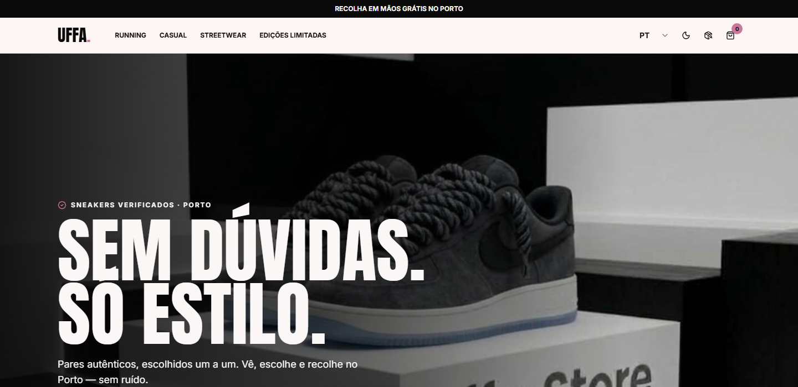
2.1 Cabeçalho e navegação
O cabeçalho é fixo (sticky) e acompanha todas as páginas.
- Altura —
h-20 md:h-24, com logótipo proporcional. - Menu — Casual, Streetwear, Edições Limitadas, Promoções e Ajuda, em
text-xs md:text-smcomgap-6. - Sublinhado animado — no item ativo e em
hover: ameixa#4A2B33no tema claro e rosa UFFA#E1A0B4no escuro. - Categorias sincronizadas — o clique abre
/catalogojá filtrado; se o cliente já estiver no catálogo, o filtro muda de imediato. - Ações — idioma PT/EN/ES, tema claro/escuro, favoritos com contador, rastreio e carrinho.
Abaixo de lg, o menu passa para um painel lateral com logótipo, assinatura, as quatro categorias e atalhos para favoritos, ajuda, rastreio e verificação. Fecha ao escolher uma opção.
2.2 Hero e faixa de confiança
- Hero — imagem de destaque, promessa e botão para o catálogo.
- Faixa de confiança — autenticidade, recolha no Porto e envio.
- Barra de anúncio — “Recolha em mãos grátis no Porto”, no topo de todas as páginas.
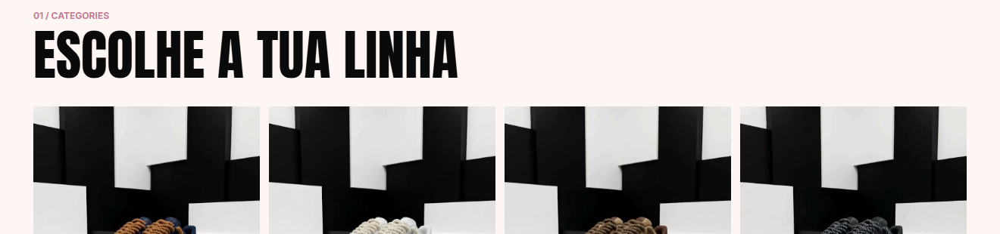
2.3 Categorias e destaques
- Categorias — Casual, Streetwear, Edições Limitadas e Promoções. Cada cartão abre o catálogo com o filtro certo.
- Mais procurados — produtos em destaque com preço, tamanhos, selo Verificado, placa PROMO e botão de compra.
- Estado vazio — se não houver destaques, a secção desaparece sem deixar espaço morto.
2.4 Bloco do portal e newsletter
- Bloco do portal — convite para acompanhar a encomenda em
/rastreio, com argumento de privacidade. - Newsletter — formulário de email no fim da home; a subscrição é enviada para
atendimento@uffastore.ptcom confirmação visual.
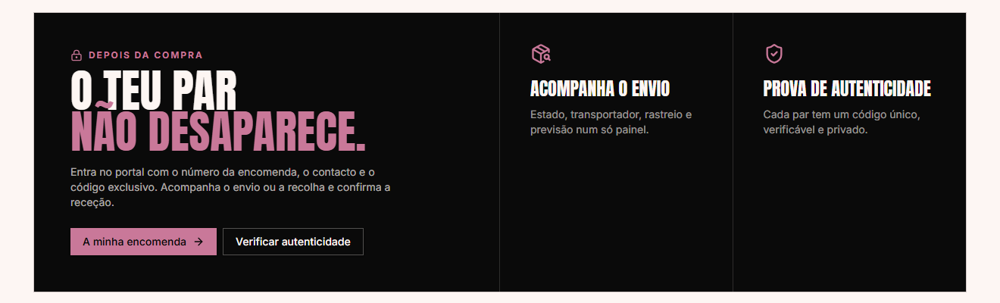
2.5 Temas e idiomas
- Tema guardado em
localStorage(uffa-theme). - Idioma guardado no contexto da loja e mantido durante a sessão.
- Todos os textos de interface passam por
tr(language, pt, en, es). - O modo escuro aplica-se a todo o site, incluindo checkout, portal e operações.
03 / CATÁLOGO
CATÁLOGO
Encontrar o par certo.
Catálogo com filtros combináveis, pesquisa instantânea e cartões que respondem antes do clique.
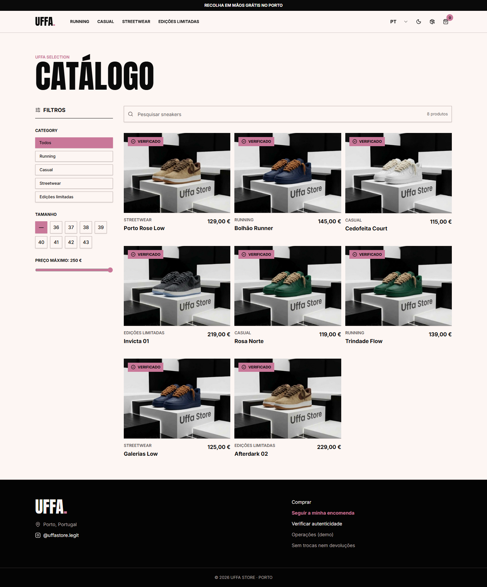
3.1 Filtros e pesquisa
| Filtro | Comportamento |
|---|---|
| Categoria | Todas, Casual, Streetwear, Edições Limitadas e Promoções |
| Tamanho | 36 a 43, ou todos |
| Preço máximo | Controlo deslizante sobre o preço atual |
| Pesquisa | Filtra por nome em tempo real, sem recarregar |
- Os filtros combinam entre si e o resultado atualiza no momento.
- O botão de limpar devolve o catálogo completo.
- O estado vazio explica o que fazer e sugere remover filtros.
3.2 Sincronização com o cabeçalho
O filtro de categoria vive no URL (/catalogo?category=sales), o que permite:
- partilhar um catálogo já filtrado;
- voltar atrás no browser e recuperar o filtro;
- clicar numa categoria do cabeçalho mesmo estando no catálogo e ver a grelha mudar sem recarregar.
Categorias suportadas: casual, streetwear, limited, sales.
3.3 Cartões de produto
Cada cartão mostra:
- imagem do par;
- selo Verificado;
- placa PROMO quando aplicável;
- nome e categoria;
- preço normal ou de oferta;
- tamanhos disponíveis;
- botão Adicionar ao carrinho;
- coração de favoritos.
Produtos sem stock aparecem como ESGOTADO, com o botão desativado.
3.4 Preços e PROMO
- Preço normal e preço de oferta usam
font-bold text-foreground. - O preço de oferta fica um nível de tamanho acima do preço normal.
- O preço original aparece riscado, sem sombras.
- A placa PROMO usa a cor burgundy
--promo,border-2 border-promo, preenchimento e tracking generosos, com contorno nítido em claro e escuro.
3.5 Stock e estados
- 5 pares por tamanho em todos os produtos do catálogo local.
- Tamanhos esgotados aparecem desativados na página de produto.
- Estado calculado automaticamente: sem stock em todos os tamanhos → ESGOTADO; caso contrário → ATIVO.
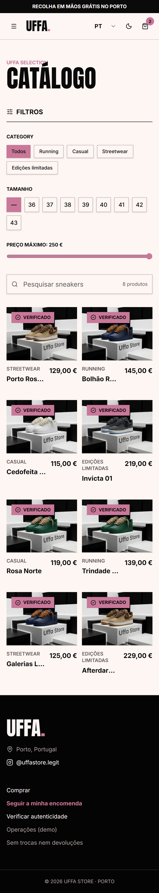
04 / PRODUTO
PRODUTO
A decisão acontece aqui.
A página de produto responde às dúvidas todas antes do carrinho.
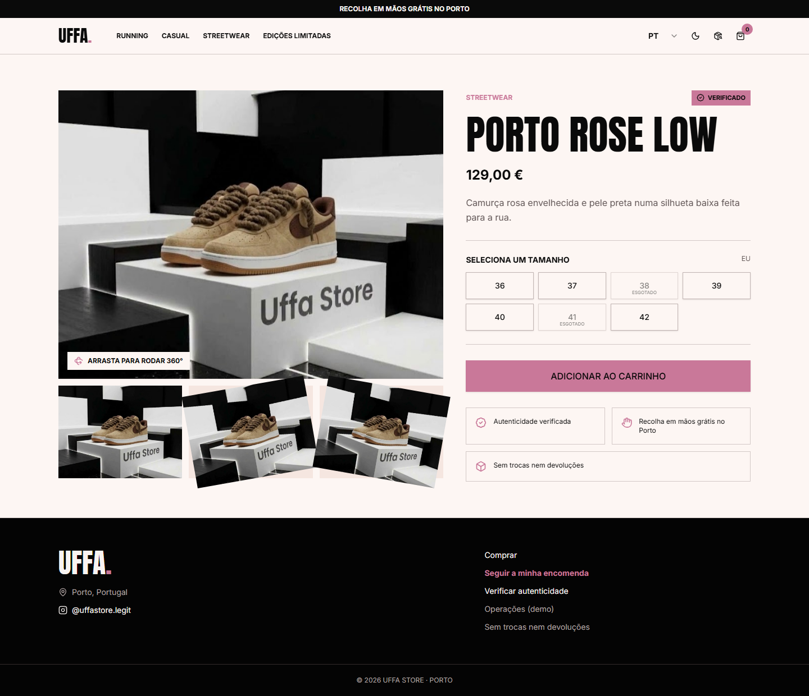
4.1 Galeria e informação
- Galeria — imagem principal, miniaturas e rotação 360°.
- Categoria e selo — PROMO, ESGOTADO ou EM BREVE.
- Nome e descrição — traduzidos em PT/EN/ES.
- Preço — normal ou de oferta, com o original riscado.
- Quantidade — ajuste antes de adicionar.
- Adicionar ao carrinho — valida o tamanho escolhido.
- Favoritos — guarda o par na lista de desejos.
4.2 Tamanhos e stock
- Só os tamanhos com stock ficam selecionáveis.
- Cada tamanho tem SKU e variante Shopify associados.
- O stock local está a 5 pares por tamanho.
- Ao esgotar, o tamanho passa a desativado e o produto muda de estado quando todos acabam.
4.3 Garantias e relacionados
- Autenticidade — cada par tem código
UFFA-AUTH. - Recolha grátis no Porto — visível sem abrir menus.
- Política de trocas — resumida junto ao preço.
- Relacionados — sugestões da mesma categoria, com o mesmo cartão do catálogo.
05 / CARRINHO
CARRINHO
O último empurrão.
O carrinho é uma camada lateral: o cliente não perde o contexto da loja.
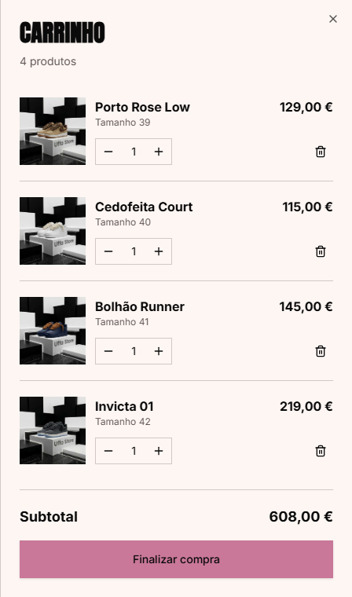
5.1 Artigos e quantidades
- Lista com imagem, nome, tamanho, quantidade e preço.
- Alteração de quantidade com
+/-. - Remoção individual.
- Subtotal, desconto e total sempre visíveis.
- Finalizar encomenda leva ao checkout.
5.2 Cupões
| Código | Desconto |
|---|---|
UFFA10 | 10% |
PORTO20 | 20% |
VIP15 | 15% |
O código é validado localmente, sem distinção de maiúsculas, e aplicado ao subtotal. Um código inválido devolve mensagem clara e não altera o total.
5.3 Partilha e persistência
- Partilhar no WhatsApp — gera mensagem com o resumo do carrinho.
- Copiar carrinho — copia o resumo para a área de transferência.
- O carrinho persiste em
localStorage(uffa-cart) e sobrevive a recargas.
06 / CHECKOUT
CHECKOUT
Três decisões. Zero fricção.
Entrega, pagamento e confirmação — sem criação de conta.
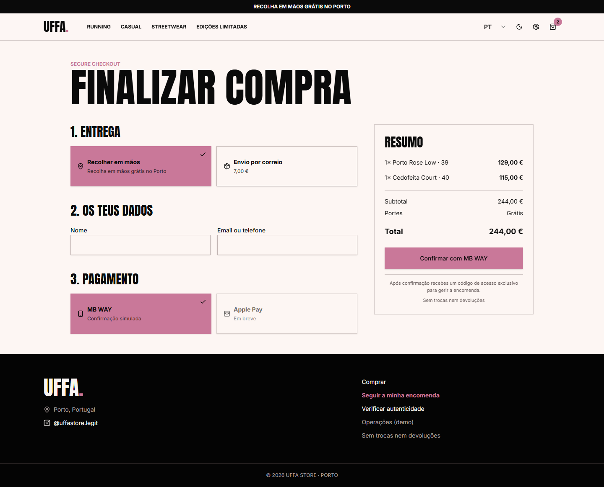
6.1 Entrega e portes
| Opção | Preço | Nota |
|---|---|---|
| Recolha em mão no Porto | 0,00 € | Entrega combinada com a equipa |
| Portugal Continental | 8,94 € | Envio expresso |
| Portugal — Ilhas | 8,94 € | Açores e Madeira |
| União Europeia | 24,00 € | Qualquer país da UE |
| Suíça | 34,00 € | Envio internacional |
O resumo atualiza o total assim que a modalidade muda.
6.2 Pagamento e Shopify
- O checkout local apresenta Cartão / MB WAY / Google Pay como método seguro via Shopify.
- Ao clicar em Pagar agora, o cliente é redirecionado para o checkout oficial da Shopify.
- Aí completa nome, email, telefone e morada, e escolhe o método disponível na loja.
- Não é criada conta UFFA.
A integração cria um checkout com:
- variantes e quantidades;
- modalidade de entrega e respetivo custo, via atributos
Modalidade de Entrega,Portes de Envio,Tipo de EnvioeDestino / Zona; - código de desconto, quando aplicável;
- idioma do cliente.
6.3 Cupões e erros
- O desconto é aplicado ao subtotal e passado como
discountCodes. - Sem variáveis Shopify válidas, o catálogo local continua a funcionar, mas o checkout não conclui — mostrar a mensagem de erro e validar o
.env.
07 / CONFIRMAÇÃO
CONFIRMAÇÃO
O pós-compra começa aqui.
A confirmação explica o que guardar e o que fazer a seguir.
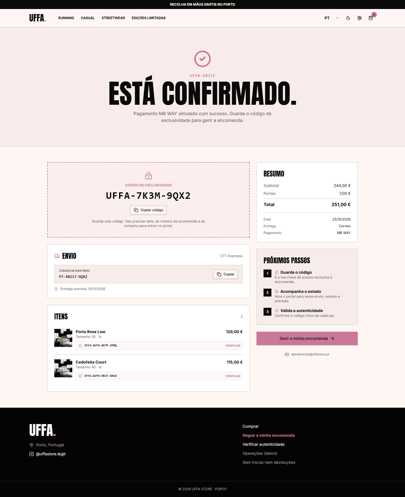
7.1 O que o cliente recebe
- Número da encomenda —
UFFA-XXXXX. - Código exclusivo —
UFFA-XXXX-XXXX, a chave do portal. - Código de rastreio — nas encomendas com envio.
- Código de autenticidade por par —
UFFA-AUTH-XXXX-XXXX. - Resumo — artigos, entrega, subtotal, portes e total.
- Próximos passos — guardar o código e acompanhar em
/rastreio.
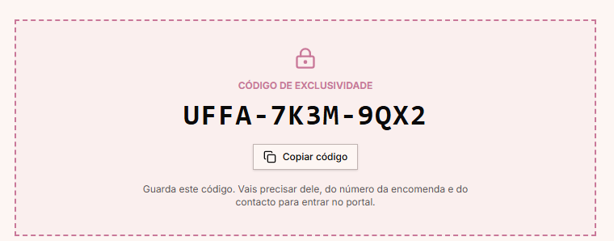
7.2 Âmbito da demonstração
- A página lê as encomendas guardadas no browser (
uffa-orders-v1). - Nas encomendas concluídas na Shopify, a confirmação e o acompanhamento são enviados pela própria Shopify por email.
- A confirmação local só encontra uma encomenda se ela existir nesse armazenamento.
08 / PORTAL
PORTAL
O par não desaparece.
O cliente passa a ter um espaço privado para acompanhar envio ou recolha e confirmar a entrega.
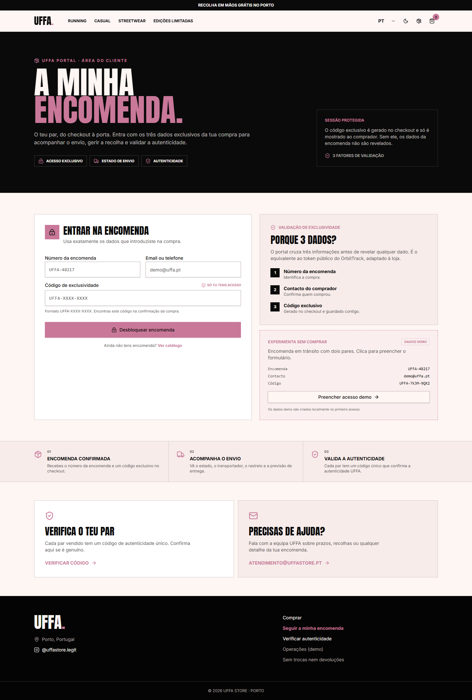
8.1 Acesso por três fatores
| Fator | Exemplo |
|---|---|
| Número da encomenda | UFFA-48217 ou apenas 48217 |
| Contacto | demo@uffa.pt |
| Código exclusivo | UFFA-7K3M-9QX2 |
Regras de proteção:
- 5 tentativas falhadas por encomenda;
- bloqueio de 60 segundos ao atingir o limite;
- sessão de 30 minutos;
- botão Terminar sessão sempre visível.
8.2 Dashboard do cliente
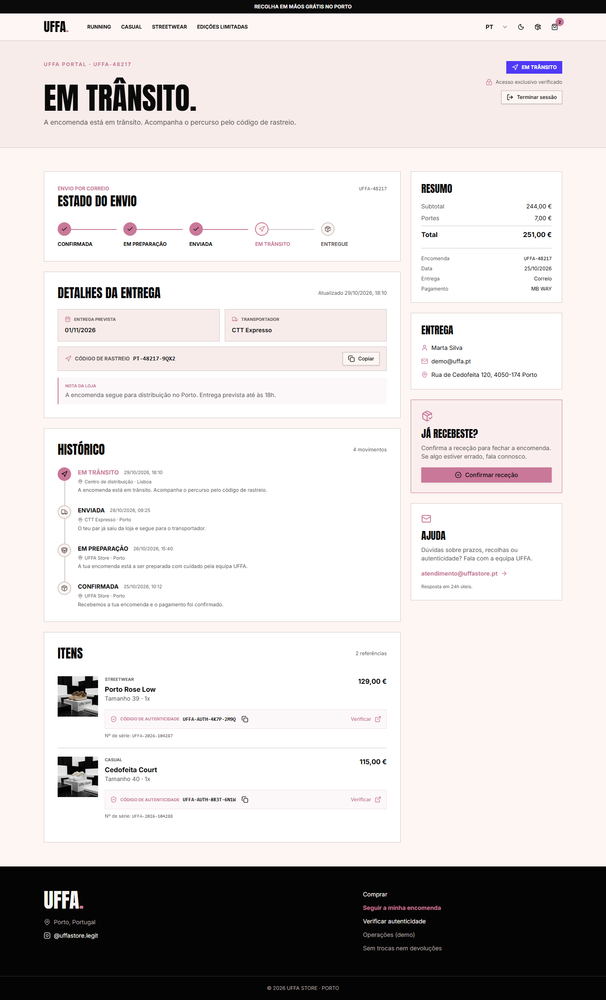
- Estado atual e linha temporal.
- Previsão de entrega ou data limite de recolha.
- Transportador e código de rastreio, no envio.
- Morada da loja e nota pública, na recolha.
- Resumo de valores.
- Itens com código de autenticidade.
- Botão Confirmar receção ou Confirmar recolha.
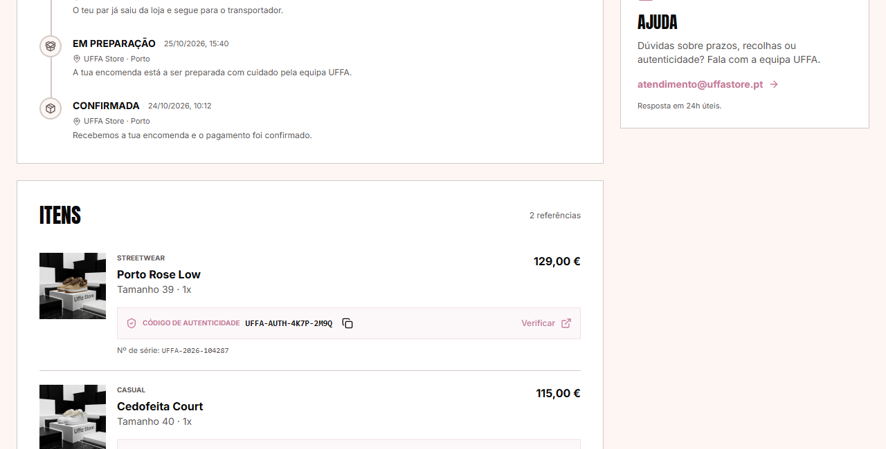
8.3 Fluxos de estado
Envio
Confirmada → Em preparação → Enviada → Em trânsito → EntregueRecolha
Confirmada → Em preparação → Pronta para recolha → RecolhidaIndependente: Cancelada
Cada mudança cria um evento com data e hora no histórico visível ao cliente.
09 / AUTENTICIDADE
AUTENTICIDADE
A prova de autenticidade.
Cada par tem um código único. Qualquer pessoa pode validá-lo, sem ver dados do comprador.
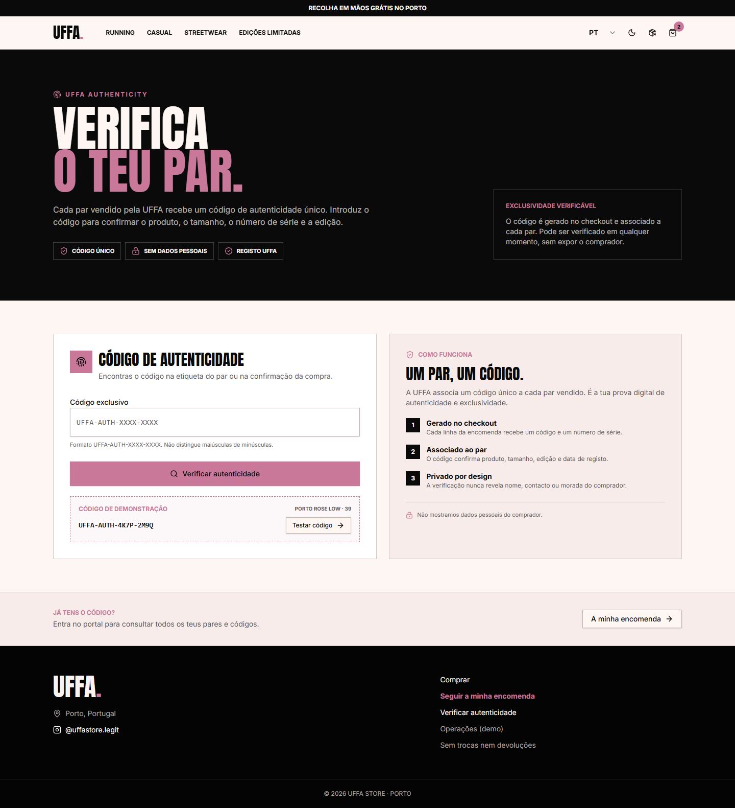
9.1 Como verificar
- Abrir
/verificar. - Introduzir o código
UFFA-AUTH-XXXX-XXXX. - Confirmar o resultado.
Também aceita link direto: /verificar?codigo=UFFA-AUTH-XXXX-XXXX. O código não distingue maiúsculas de minúsculas.
9.2 Resultado válido
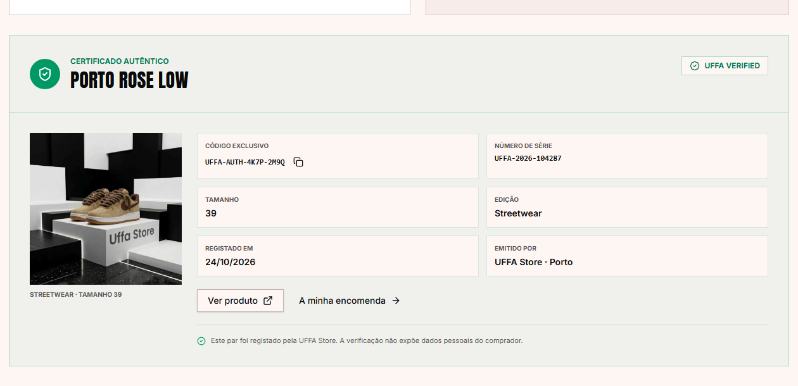
O certificado mostra:
- selo UFFA Verified;
- produto e tamanho;
- edição e número de série;
- data de emissão;
- loja emissora.
9.3 Resultado inválido e privacidade
- Código inexistente devolve mensagem clara e contacto da equipa.
- O resultado nunca mostra nome, email, telefone ou morada do comprador.
- O código é a única chave: quem o tiver consegue validar, mas não acede à encomenda.
10 / OPERAÇÕES
OPERAÇÕES
Gerir sem folhas de cálculo.
Painel interno de demonstração para atualizar estado, previsão, rastreio, transportador e nota pública.
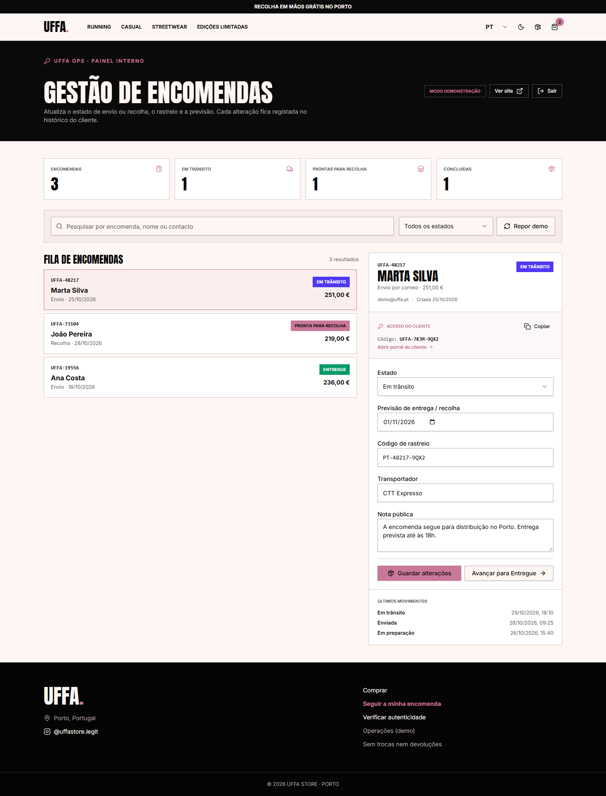
10.1 Entrada e indicadores
- Chave demo:
UFFA-OPS-2026. - Indicadores: total, em trânsito, prontas para recolha e concluídas.
- Sessão terminada pelo botão Sair.
10.2 Fila e pesquisa
- Pesquisa por número, nome ou contacto.
- Filtro por estado.
- Fila ordenada pela última atualização.
- Cada linha mostra número, cliente, estado e entrega.
10.3 Editor e avanço de estado
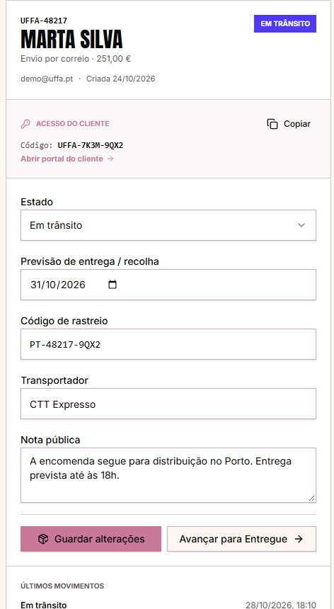
- Estado, previsão, rastreio, transportador e nota pública.
- Avançar para… move para o estado seguinte permitido.
- O editor adapta-se ao tipo de entrega: rastreio e transportador só aparecem em envios.
- Cada gravação cria um evento no histórico.
10.4 Credenciais, histórico e reposição
- Copiar gera credenciais e link do portal para enviar ao cliente.
- Histórico lista os últimos movimentos.
- Repor demo restaura as encomendas de exemplo.
- As alterações refletem-se de imediato no portal do cliente.
11 / MOBILE
MOBILE
A mesma experiência, no bolso.
Layout mobile-first, validado a 390 px, sem funcionalidades escondidas.
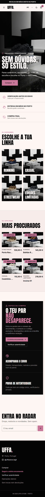
11.1 Breakpoints e menu
- Abaixo de
lg, o menu passa para painel lateral com categorias e atalhos. - O cabeçalho reduz para
h-20, mantendo o logótipo proporcional. - A barra de anúncio continua visível.
11.2 Ecrãs pequenos
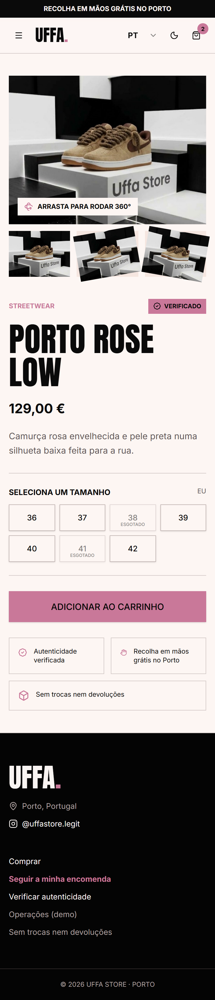
- Grelha do catálogo empilhada; filtros utilizáveis.
- Produto com galeria, tamanhos e CTA ao alcance do polegar.
- Carrinho e checkout a largura total.
- Portal e operações com cartões empilhados.
- Alvos de toque com pelo menos 44 px.
- Imagens com
alte carregamento diferido.
12 / TECNOLOGIA
TECNOLOGIA
Simples na demo, pronto para produção.
Stack moderna, dados isolados por camada e fallback automático.
12.1 Stack e ficheiros
| Camada | Tecnologia |
|---|---|
| Interface | React 19 + TanStack Start |
| Estilo | Tailwind CSS + tokens de tema |
| Dados | src/lib/shop-data.ts (local) e Storefront API |
| Encomendas | src/lib/orders.ts + localStorage |
| Build | Vite + Nitro (preset Cloudflare) |
| Deploy | Vercel, automático em main |
| Ficheiro | Responsabilidade |
|---|---|
src/lib/shop-data.ts | Produtos, preços, tamanhos, stock e textos |
src/lib/shopify.ts | Catálogo e checkout Shopify |
src/lib/orders.ts | Encomendas, códigos, estados e sessões |
src/lib/shop-context.tsx | Carrinho, favoritos, cupões, tema e idioma |
src/components/site-shell.tsx | Cabeçalho, navegação, carrinho e footer |
src/routes/* | Uma rota por ecrã |
docs/shopify/produtos-uffa.csv | Catálogo de importação com 5 unidades por variante |
12.2 Variáveis de ambiente
| Variável | Onde encontrar |
|---|---|
VITE_SHOPIFY_STORE_DOMAIN | xxxxx.myshopify.com |
VITE_SHOPIFY_STOREFRONT_ACCESS_TOKEN | Admin → Headless → Storefront API → token público |
Sem estas variáveis, o site usa o catálogo local e o checkout Shopify não conclui.
12.3 Build, deploy e segurança
npm install
npm run dev # http://localhost:8080
npx tsc --noEmit
npm run build- O deploy de produção é automático na Vercel a cada push para
main. - A demonstração guarda encomendas, tentativas e sessões no browser.
- Em produção, validação e persistência têm de passar para um backend com autenticação, base de dados e auditoria.
ANEXO A · DADOS DE DEMONSTRAÇÃO
DADOS DE DEMONSTRAÇÃO
Encomendas
| Encomenda | Contacto | Código exclusivo | Estado |
|---|---|---|---|
UFFA-48217 | demo@uffa.pt | UFFA-7K3M-9QX2 | Em trânsito |
UFFA-73104 | demo@uffa.pt | UFFA-2P8N-5RV6 | Pronta para recolha |
Códigos de autenticidade
| Código | Produto | Tamanho |
|---|---|---|
UFFA-AUTH-4K7P-2M9Q | Porto Rose Low | 39 |
UFFA-AUTH-8R3T-6N1W | Cedofeita Court | 40 |
UFFA-AUTH-9C2L-7B4X | Invicta 01 | 42 |
Cupões
| Código | Desconto |
|---|---|
UFFA10 | 10% |
PORTO20 | 20% |
VIP15 | 15% |
Acessos
| Sistema | Credencial |
|---|---|
| Painel de operações | UFFA-OPS-2026 |
| Portal do cliente | Número + contacto + código exclusivo |
| Verificação | Código UFFA-AUTH-XXXX-XXXX |
ANEXO B · RESOLUÇÃO DE PROBLEMAS
RESOLUÇÃO DE PROBLEMAS
| Sintoma | Causa provável | Solução |
|---|---|---|
| O site mostra o catálogo local | Variáveis Shopify em falta | Preencher .env e reiniciar o servidor |
| Produto não aparece | Estado inactive ou sem stock | Verificar status e stock em shop-data.ts |
| Categoria não filtra | URL sem ?category= | Clicar na categoria do menu ou abrir /catalogo?category=casual |
| Filtro não muda no catálogo | Estado antigo em cache | Recarregar; confirmar search.category no URL |
| Checkout não abre na Shopify | Domínio ou token inválidos | Validar variáveis e a consola do browser |
| Portal recusa acesso | Dados ou código incorretos | Usar as credenciais do Anexo A ou repor demo |
| Portal bloqueado | 5 tentativas falhadas | Aguardar 60 segundos |
| Sessão expirou | Passaram 30 minutos | Voltar a entrar |
| Tema não guarda | localStorage bloqueado | Permitir armazenamento no browser |
| Confirmação vazia | Encomenda não existe localmente | Usar uma encomenda demo do Anexo A |
| Preço de oferta sem destaque | Falta de originalPrice | Confirmar o campo no produto |
| Imagem não carrega | Caminho ou asset em falta | Validar src/assets e o alt |
ANEXO C · COMANDOS, BUILD E DEPLOY
COMANDOS, BUILD E DEPLOY
# instalar
npm install
# desenvolvimento
npm run dev # http://localhost:8080
# validação
npx tsc --noEmit
npm run build
npm run lint
# apresentações
npm install --no-save --package-lock=false pptxgenjs
node scripts/build-apresentacao-site.mjs
node scripts/build-apresentacao.mjs
# manual em HTML
node scripts/build-manual.mjs
# publicar
git add .
git commit -m "docs: atualizar manual e materiais"
git push origin main| Comando | Efeito |
|---|---|
npm run dev | Servidor local com hot reload |
npx tsc --noEmit | Verificação de tipos |
npm run build | Build de produção |
node scripts/build-manual.mjs | Gera docs/manual-site.html |
node scripts/build-apresentacao-site.mjs | Gera o deck do site |
ANEXO D · MAPA DE FICHEIROS E GLOSSÁRIO
MAPA DE FICHEIROS E GLOSSÁRIO
Documentação
| Ficheiro | Conteúdo |
|---|---|
docs/manual-site.md | Este manual (fonte) |
docs/manual-site.html | Manual paginado no estilo da apresentação |
docs/guia-apresentacao-site.md | Guião slide a slide do site |
docs/guia-apresentacao.md | Guião slide a slide do portal |
docs/portal-encomendas.md | Arquitetura e segurança do portal |
docs/apresentacao-site-uffa.pptx | Apresentação do site |
docs/apresentacao-uffa.pptx | Apresentação do portal |
docs/assets/screenshots/ | Capturas completas e recortes |
Glossário
| Termo | Significado |
|---|---|
| Código exclusivo | Chave UFFA-XXXX-XXXX que dá acesso ao portal |
| Código de autenticidade | UFFA-AUTH-XXXX-XXXX, prova pública por par |
| PROMO | Placa burgundy que marca preço de oferta |
| Verificado | Selo de autenticidade no cartão e no produto |
| Storefront API | API pública da Shopify usada pelo catálogo |
| Fallback local | Catálogo de shop-data.ts usado se a API falhar |
| Repor demo | Restaura as encomendas de exemplo |
| Sessão protegida | Acesso ao portal válido por 30 minutos |
UFFA Store · Porto · atendimento@uffastore.pt · @uffastore.legit